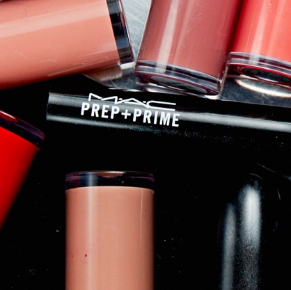

M.A.C是专业艺术彩妆品牌，提供上百款色彩的眼影，唇膏，粉底，是每位彩妆爱好者的挚爱之选。M·A·C是雅诗兰黛化妆品集团旗下第一个非由兰黛夫人自创的品牌。1985年，专业彩妆师暨摄影师Frank Toskan，以及经营连锁美发沙龙的Frank Angelo，结合二人专业能力及资源,在加拿大多伦多共同创办了M·A·C。M·A·C的 耀眼光芒，吸引了雅诗兰黛集团慧眼视得这块熠熠生辉的美玉。而在雅诗兰黛集团的协助与支持之下，M·A·C的优异特质才得以被发掘、散播，从北美地区远扬至欧亚各国。
就如同许许多多的彩妆大师推出自创品牌化妆品,大多是因为一般市面上的化妆品已不符专业理念所需,Toskan在谈到他开发M·A·C的产品时,也是基于相同的原因。因此,Toskan着手开发一系列色彩、质感及工具都不同于其它品牌,适合舞台、电视、摄影,甚至就连走在街头也能够耀眼出色的化妆品。
基于与多数彩妆大师品牌相同的原因开始自创品牌,M·A·C却以高度的创意与前卫的观念,发展出M·A·C无可比拟的独特风格。M·A·C的色彩大胆创新,作风颠覆传统,所秉持的,却是几个最简单平凡的精神理念、人道、平等,商业的正义与责任。